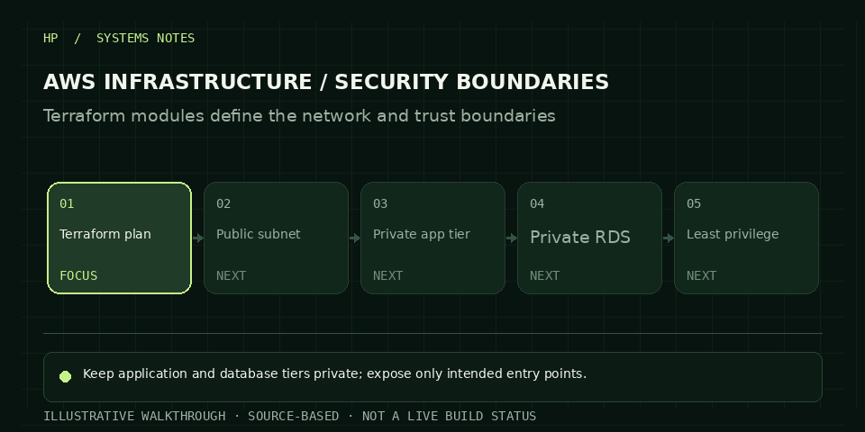

Avoid a flat cloud network where administration, public entry points, application services and databases share weakly defined trust boundaries.
02 / CASE STUDYENGINEERING NOTES
AWS INFRASTRUCTURE SECURITY PLATFORM / CLOUD & IaC
Make the secure path the default path.
A modular Terraform approach to secure AWS foundations: segmented networking, restricted ingress, TLS at the edge and a private data tier.

ANIMATED WALKTHROUGH · ILLUSTRATIVEOCT 2026
Model repeatable network and security components as Terraform modules; isolate data services in private subnets and restrict traffic paths.
The repository presents modular Terraform for VPC, subnets, bastion/VPN, load balancing, TLS and private RDS.
HOW IT FITS TOGETHER
The system, at a glance.
Architecture diagram based on the design documented in the repository.
AWS / TERRAFORM MODULE VIEWOpen repository ↗
VPC · segmented network
PUBLIC SUBNET
EDGEALB / NLBACM TLS
ACCESSBastion / VPNrestricted admin
→ least-privilege rules →
PRIVATE SUBNET
APP TIERApplicationprivate routes
DATA TIERRDS MySQLencrypted · private
Illustrative architecture view based on the repository description; actual billable resources depend on the Terraform variables and deployment choices.
STEP THROUGH THE DESIGN
A short technical walkthrough.
Use the steps to inspect the order of decisions and the job each stage does.
CURRENT STEP01 / 05
Plan changes
Review Terraform plans and module variables before creating billable resources.
ENGINEERING DECISIONS
What matters in this build.
Keep the data tier private
RDS belongs in private subnets; security groups should allow database traffic only from the application tier.
Review the plan before apply
Terraform plans make proposed infrastructure changes visible before billable resources are created.
Treat identity as a boundary
Use narrow IAM roles and management paths rather than broad reusable credentials.
COST NOTE
Cost is driven by uptime and managed services.
A VPC and subnet definitions are not the main cost drivers. Watch NAT Gateway hours and data processing, EC2 or other compute, RDS uptime/storage, load balancers, CloudFront transfer and logs. The repository documentation does not publish a measured monthly bill; estimate the topology and shut down or destroy billable resources after validation.
Estimate with AWS Pricing Calculator ↗NEXT STEP
Email Hemanth↗